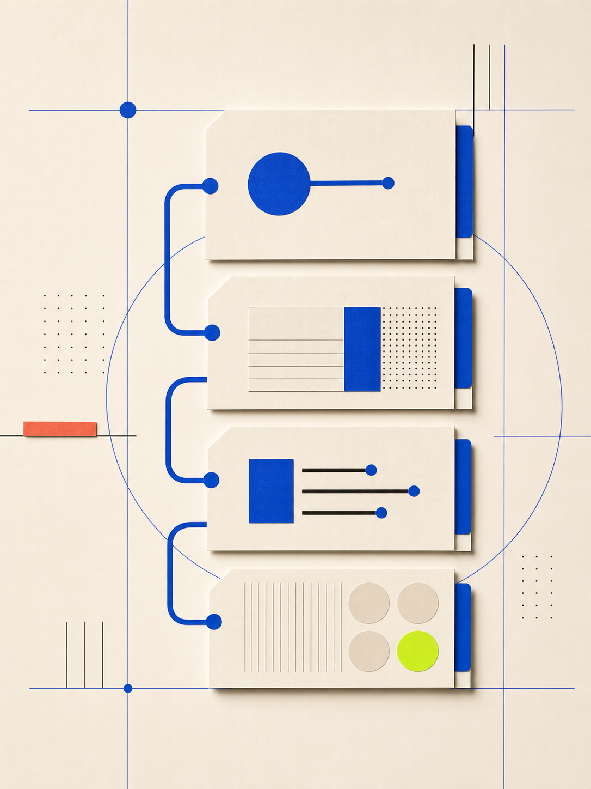

01 / GOAL目标
要它做什么？先从最终结果说起。
02 / CONTEXT上下文
哪些来源、资料或视觉信息会改变答案？
03 / OUTPUT输出
要什么格式、长度、层级，才能拿来就用？
04 / BOUNDARY边界
什么不能动？什么要先问，不要擅自做？
OPENAI 官方 PROMPT 指南
不用找万能模板。目标、上下文、输出和边界，才是会改变结果的信息。
第一条 Prompt 不必完美，关键是给它足够正确的起点。

从结果、受众或成品格式开始，而不是把每一步都写死。
只补会改变答案、成品或风险判断的上下文。
第一轮不是交卷。保留证据，再说清下一步要改哪里。
复杂任务 / PROMPTING
要它做什么？先从最终结果说起。
哪些来源、资料或视觉信息会改变答案？
要什么格式、长度、层级，才能拿来就用？
什么不能动？什么要先问，不要擅自做？
Prompt 的价值不在“写得更像咒语”，而在把真正会影响结果的条件讲清楚。
SAVE THIS